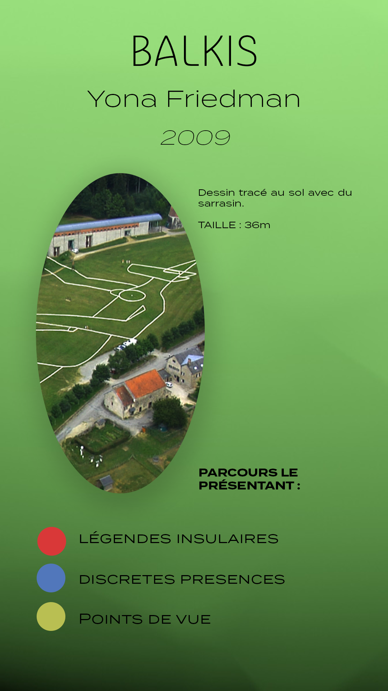
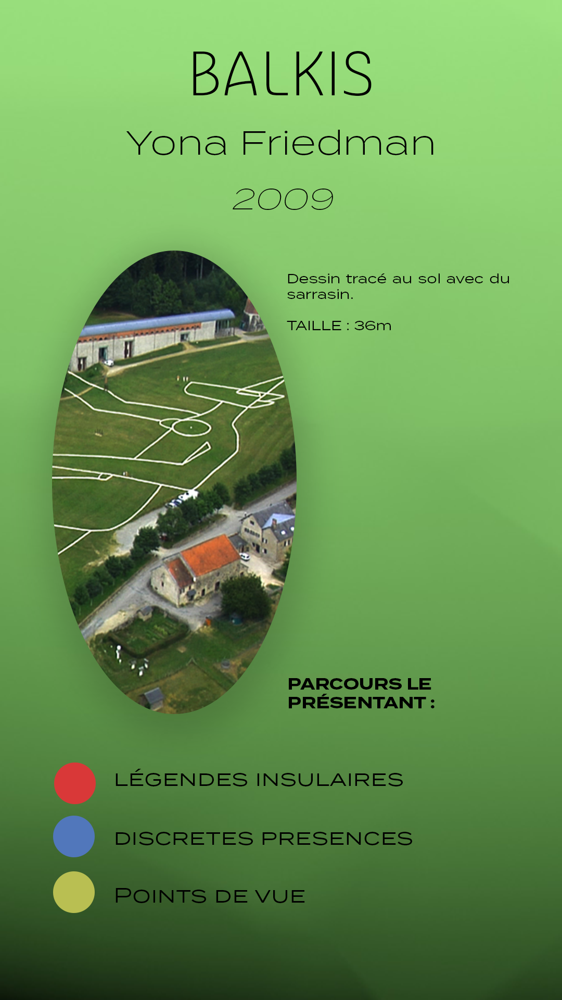

Rapport de stage
3e année DN MADe Graphisme
Rapport de mon stage d'une durée de deux mois, effectué à l'agence Fertil Ink au sein de la Grand Usine Créative de Saint-Étienne, où j'ai pu découvrir les rudiments de la production audiovisuelle. Mes principales missions ont été d'assister Julien (mon maître de stage) dans la mise en place du matériel pour les tournages, mais aussi la création de visuels et l'animation de personnages.
Format : 200 x 250mm
Papiers : Couché 100g / Calque 70g


Mémoire
3e année DN MADe Graphisme
Consultable ICI
Ce mémoire traite du lien entre les formes et les sons, à travers le bricolage numérique. J’ai choisi ce sujet car musique et nouvelles technologies, pour moi se complètent et évoluent en relation l’un avec l’autre. Ainsi, nous verrons comment passer de la forme sonore à quelque chose de plus complexe, à l’aide d’outils numériques. Le terme «bricolage numérique» recouvre toutes les manipulations numériques possibles, au cours du processus de fabrication. Tout d’abord, nous tenterons de comprendre comment une image ou une forme peut être produite à partir d’un son et inversement, et comment les outils numériques accentuent et compliquent leur interaction. Ensuite, nous interrogerons la place du public / spectateur, (celui qui voit cette interaction) qui devient l’acteur de cette interaction. Et comment, en s’imprégnant, ils peuvent transformer le simple dialogue entre sons et formes en une véritable expérience audiovisuelle. Enfin, nous pourrons nous rendre compte que l’immersion de l’utilisateur peut devenir le point de départ de l’interaction entre le son et la forme.
Format : Numérique
Langages : HTML / CSS / JavaScript


Projet personnel
3e année DN MADe Graphisme
Les expérimentations menées à la suite de mon mémoire m’ont permis de mettre en place des dispositifs techniques et des procédés graphiques, afin d’instaurer une interaction entre sons, formes et spectateurs.
Dans un premier temps, j’ai étudié la mise en place d’un dispositif invitant le spectateur à l’interaction. L’installation comprend une carte Arduino, un Raspberry Pi, ainsi qu’un vidéoprojecteur. L’usager est invité à interagir avec un capteur de lumière (placé sur la carte Arduino). Ces actions vont générer des formes graphiques vidéos projetées liées à des sons.
Dans un second temps, j’ai étudié à l’aide du logiciel TouchDesigner, des manières différentes d’illustrer graphiquement un spectre audio. L’objectif est de mettre en lien ces nouvelles formes visuelles avec le dispositif étudié plus haut.
Format : Installation / Numérique
Outils : Raspberry Pi / Arduino / Processing / TouchDesigner


Identité visuelle
2e année BTS Design Graphique
Le label Hammerbass record & promotion, fondé en 1997 par le collectif DUB ACTION, est l’un des premier label français à promouvoir la culture dub. Étant en perte de vente et d’artiste ces dernier temps, il souhaite actualiser leur image afin d’acquérir plus de visibilité pour promouvoir au mieux les artistes et la culture qu’il représente ou a pu représenter. Mon objectif est d’augmenter la notoriété de Hammerbass, redorer son image en mettant mieux en avant ses valeurs, proposer une communication plus adapter aux nouvelles technologies et faire découvrir ou redécouvrir mon client sous un nouvel angle. Pour cela, la refonte de son identité est nécessaire, puis, celle du site web.
Format : Numérique
Outils : Illustrator / Photoshop


 



Application Mobile
2e année BTS Design Graphique
Ouvert toute l’année et à tous les publics, le Centre international d’art et du paysage est un lieu d’art à échelle humaine. Situé sur l’île de Vassivière, elle n’est qu’en apparence naturelle. Paysage pensé et façonné par l’homme, l’île est devenue depuis les années 1980 un territoire de rencontre entre la nature et la sculpture. Ce centre d’art consacré à la création contemporaine, à l’expérimentation, à la production, questionne une perception du paysage que l’exploitation des ressources, l’aménagement des territoires et les inventions citoyennes transforment en profondeur. Amateur d’Art ou visiteur lambda, tout le monde peut venir visiter l’île et découvrir les œuvres le long des différents circuits. Or, il n’y a pas, ou peu d’informations pour le moment sur les chemins. Pourtant, une œuvre d’art contemporain a souvent besoin de support afin d’expliquer son contenu, son contexte de création et les concepts en jeu. Mon rôle a donc été de créer une application afin d’affiner la médiation du lieu et des œuvres.
Format : Numérique
Outils : 3DS Max / Photoshop


Identitée visuelle
3e année DN MADe Graphisme
Lors d'un workshop d'une semaine avec les Docks de Cahors, nous avons du (en groupe) leur proposer une solution d'identitée visuelle.
Les Docks de Cahors sont un espace de vie et de partage où se croisent scène de musiques actuelles, graff park et skatepark. Lieu chargé d'histoire en perpetuelle évolution, mutation, transformation, nous avons voulu mettre en avant cela dans notre proposition.
Ouvrir le fichier PDF présentation.


Identitée visuelle
2e année BTS Design Graphique
Lors d'un coworking avec l'agence Euré-k, nous avons (en groupe) réalisé l'identité visuelle d'une nouvelle gamme de tartinade. La marque "Les fins gourmets" nous a laissé la liberté de trouver le nom de cette gamme, et développerr l'identité autour de celle-ci.
Format : Numérique / Imprimé
Outils : After Effect / Illustrator / Photoshop / InDesign


Typographie modulaire
2e année BTS Design Graphique
Conception d’une typographie modulaire à l’aide de formes géométriques simples. Facette est une police qui peut illustrer plusieurs ambiances en arborant différentes couleurs. Les caractères sont pensés comme en trois dimensions, ou la lumière viendrait les éclairer par en haut a droite. Une fois la typographie conçu, elle devait être mise en application sur la pochette d’album d’un artiste.
Format : Numérique
Outils : Illustrator / Photoshop
Atelier photo : Répétition
2e année BTS Design Graphique
La répétition est partout et nul part à la fois dans l’art, devant être unique pour être considéré comme tel, l’artiste développe pourtant son style en répétant les formes qu’il crée ou les couleurs qu’il exploite, ce qui est assez paradoxal. Le terme de répétition constituera le fil conducteur de mes productions. Par le biais de différentes techniques de photomontage traditionnel (à l’aide de miroirs par exemple) ou numérique (découpage, recomposition, simplification, multiplication, reproduction...), j’ai créé une série d'images graphiques illustrant le répétition à travers le motif ou le fractal, faisant perdre le sens du sujet photographié.
Format : Numérique
Outils : Appareil photo objectif 50mm / Miroirs / Lightroom / Photoshop


Stay Home, Stay Positive
Projet personnel entre BTS et DN MADe
Courte animation 3D réalisée dans le cadre d’un projet collectif, visant à encourager les créations graphique tout en remerciant le personnel soignant (pour le compte Instagram Stayhomestaypositive).
Format : Numérique
Outils : 3DS Max / Photoshop / After Effect


Formats : Papiers à dessin divers / Panneaux en bois avec apprêt blanc
Outils : Crayon / Peinture à l'huile